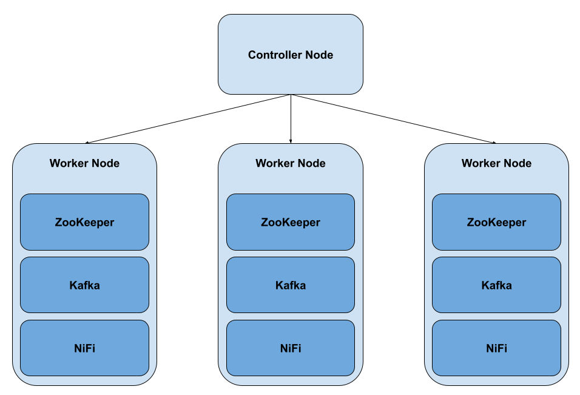
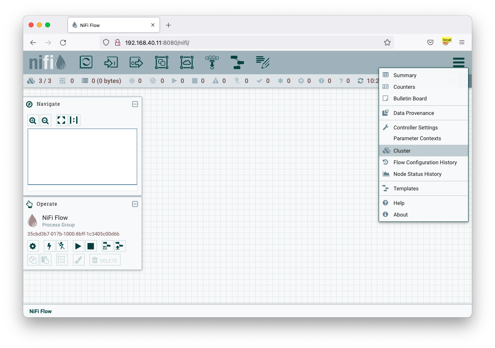
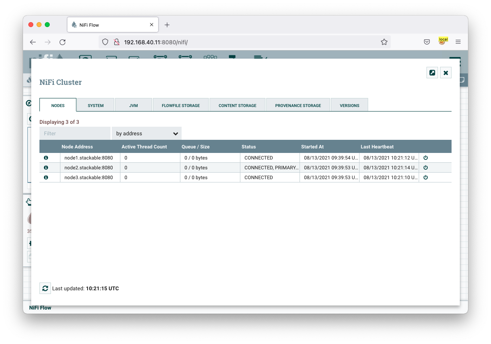

Getting Started
One of the best ways of getting started with a new platform is to try it out. Any big data platform has a lot of moving parts and getting some hands on keyboard time with it helps reinforce learning.
About this guide
Firstly, let’s cover whether this Getting Started guide is right for you. This is intended as a learning tool to discover more about Stackable, its deployment and architecture.
-
If you just want to get up and running quickly there is a quickstart script that will install services on a single node available in the stackable-utils repository on GitHub.
-
If you want to build a production cluster then this is not for you. This tutorial is to familiarise you with the Stackable architecture and is not a guide for building robust clusters.
-
This is intended for use in a private network or lab; it doesn’t enable any security features such as authentication or encryption and should not be directly connected to the Internet. Be careful if you’re deploying in the cloud as your instances may default to using public IPs.
Overview
We’re going to build a small cluster in this tutorial, so the first thing we need is some machines to build the cluster on. Maybe you have some spare servers sitting around you can use but for most people running virtual machines makes more sense. If you’ve sufficient resources on your workstation you can run them on there, or launch cloud instances if you prefer. However you choose to deploy, we recommend running your cluster across multiple hosts since this is much closer to a typical deployment.
Stackable requires a Kubernetes control plane to manage the cluster and one or more worker nodes to run the services themselves. We’ll build a simple cluster with 3 services; Apache ZooKeeper, Apache Kafka and Apache NiFi. For simplicity, we will deploy an instance of each of these services onto 3 separate nodes.

Since this is a walkthrough on how to install Stackable and we’re not building a production cluster, we can be fairly frugal with our resources. We’ll be using Ubuntu 20.04 running in VirtualBox in this walkthrough and recommend that you do the same as this will help you follow the instructions in this guide. It is assumed that you will know how to perform systems administration tasks such as configuring virtual machines, setting the hostnames and configuring name resolution. The virtual machines will require internet access to download the software.
Below is a table for recommended sizing for this tutorial. Bear in mind that these sizings are not intended for operational clusters, but for the purpose of this tutorial. If you run any significant load through this cluster then you will almost certainly need to assign more memory and disk space.
| Type | Hostname | Minimum RAM | Minimum Disk Space |
|---|---|---|---|
Controller node |
kubernetes.stackable |
2 GB |
10 GB |
Worker node 1 |
node1.stackable |
4 GB |
20 GB |
Worker node 2 |
node2.stackable |
4 GB |
20 GB |
Worker node 3 |
node3.stackable |
4 GB |
20 GB |
Installing Kubernetes
Stackable’s control plane is built around Kubernetes. We’ll be deploying services not as containers but as regular services controlled by systemd. Stackable Agent is a custom kubelet and bridges the worlds between Kubernetes and native deployment. For this walkthrough we’ll be using K3s, which offers a very quick and easy way to bootstrap your Kubernetes infrastructure.
On your controller node run the following commands as root to install K3s:
apt-get install curl curl -sfL https://get.k3s.io | sh -
So long as your VM has an Internet connection it will download and automatically configure a simple Kubernetes environment.
root@kubernetes:~# curl -sfL https://get.k3s.io | sh - [INFO] Finding release for channel stable [INFO] Using v1.21.3+k3s1 as release [INFO] Downloading hash https://github.com/k3s-io/k3s/releases/download/v1.21.3+k3s1/sha256sum-amd64.txt [INFO] Downloading binary https://github.com/k3s-io/k3s/releases/download/v1.21.3+k3s1/k3s [INFO] Verifying binary download [INFO] Installing k3s to /usr/local/bin/k3s [INFO] Creating /usr/local/bin/kubectl symlink to k3s [INFO] Creating /usr/local/bin/crictl symlink to k3s [INFO] Creating /usr/local/bin/ctr symlink to k3s [INFO] Creating killall script /usr/local/bin/k3s-killall.sh [INFO] Creating uninstall script /usr/local/bin/k3s-uninstall.sh [INFO] env: Creating environment file /etc/systemd/system/k3s.service.env [INFO] systemd: Creating service file /etc/systemd/system/k3s.service [INFO] systemd: Enabling k3s unit Created symlink /etc/systemd/system/multi-user.target.wants/k3s.service → /etc/systemd/system/k3s.service. [INFO] systemd: Starting k3s
To check if everything worked as expected you can use kubectl cluster-info to retrieve the cluster information.
root@kubernetes:~# kubectl cluster-info Kubernetes control plane is running at https://127.0.0.1:6443 CoreDNS is running at https://127.0.0.1:6443/api/v1/namespaces/kube-system/services/kube-dns:dns/proxy Metrics-server is running at https://127.0.0.1:6443/api/v1/namespaces/kube-system/services/https:metrics-server:/proxy
Now that we have Kubernetes running on the controller node we need to install it on the worker nodes. To do this we run the same installation script on the worker nodes, this time setting the K3S_URL and K3S_TOKEN environment variables. Set the K3S_URL to the URL for your coordinator node and K3S_TOKEN to the token value stored in /var/lib/rancher/k3s/server/node-token on the coordinator node:
curl -sfL https://get.k3s.io | K3S_URL=https://quickstart:6443 K3S_TOKEN=K108474026907640fe31785a65eda0f6fee40e7a084373e7a81cf39214bccc5b31e::server:3c56a97694c46b3c609f77e0aba9839e sh -
Installing Helm
Stackable uses Helm as the package manager for Kubernetes operators. This greatly simplifies the deployment and management of Kubernetes operators and CRDs. On your controller node run the following command as root to install Helm:
/usr/bin/curl -sfL https://raw.githubusercontent.com/helm/helm/main/scripts/get-helm-3 | /bin/bash -
Once Helm has been installed you can add the Stackable operator repo. There is a development and a stable repository available.
Stackable Development Repository
/usr/local/bin/helm repo add stackable-devel https://repo.stackable.tech/repository/helm-dev/
Stackable Stable Repository
/usr/local/bin/helm repo add stackable https://repo.stackable.tech/repository/helm-stable/
Installing Stackable
Installing Stackable Operators
The Stackable operators are components that translate the service definitions deployed via Kubernetes into deploy services on the worker nodes. These can be installed on any node that has access to the Kubernetes control plane. In this example we will install them on the controller node.
Stackable operators are installed using Helm charts. Run the following commands to install the operators for ZooKeeper, Kafka and NiFi using the repo configured earlier. The --devel flag will choose the latest available version; alternatively the --version flag can be used to deploy a specific version.
Stackable Development Repository
/usr/local/bin/helm install zookeeper-operator stackable-devel/zookeeper-operator --devel
/usr/local/bin/helm install kafka-operator stackable-devel/kafka-operator --devel
/usr/local/bin/helm install nifi-operator stackable-devel/nifi-operator --devel
Stackable Stable Repository
/usr/local/bin/helm install zookeeper-operator stackable/zookeeper-operator --devel
/usr/local/bin/helm install kafka-operator stackable/kafka-operator --devel
/usr/local/bin/helm install nifi-operator stackable/nifi-operator --devel
You can check which operators are installed using helm list:
user@quickstart:~/stackable-utils/quickstart$ sudo helm list NAME NAMESPACE REVISION UPDATED STATUS CHART APP VERSION zookeeper-operator default 1 2021-11-22 15:59:39.347466654 +0000 UTC deployed zookeeper-operator-0.1.0+mr255 0.4.0
Deploying Stackable Services
At this point you’ve successfully deployed the Stackable node infrastructure and are ready to deploy services to the cluster. To do this we provide service descriptions to Kubernetes for each of the services we wish to deploy.
Apache ZooKeeper
We will deploy 3 Apache ZooKeeper instances to our cluster. This is a fairly typical deployment to provide resilience against the failure of a single ZooKeeper node.
kubectl apply -f - <<EOF
---
apiVersion: zookeeper.stackable.tech/v1alpha1
kind: ZookeeperCluster
metadata:
name: simple
spec:
version: 3.5.8
servers:
roleGroups:
default:
selector:
matchLabels:
kubernetes.io/os: linux
replicas: 3
config:
adminPort: 12000
clientPort: 2181
metricsPort: 9505
dataDir: /var/lib/zookeeper
initLimit: 5
syncLimit: 2
EOF
Apache Kafka
We will deploy 3 Apache Kafka brokers, another typical deployment pattern for Kafka clusters. Note that Kafka depends on the ZooKeeper service and the zookeeperReference property below points to the namespace and name we gave to the ZooKeeper service deployed previously.
kubectl apply -f - <<EOF
---
apiVersion: kafka.stackable.tech/v1alpha1
kind: KafkaCluster
metadata:
name: simple
spec:
version:
kafka_version: 2.8.0
zookeeperReference:
namespace: default
name: simple
brokers:
roleGroups:
default:
selector:
matchLabels:
kubernetes.io/os: linux
replicas: 3
config:
logDirs: "/tmp/kafka-logs"
metricsPort: 9605
Apache NiFi
We will deploy 3 Apache NiFi servers. This might seem over the top for a tutorial cluster, but it’s worth pointing out that the operator will cluster the 3 NiFi servers for us automatically.
kubectl apply -f - <<EOF
---
apiVersion: nifi.stackable.tech/v1alpha1
kind: NifiCluster
metadata:
name: simple
spec:
metricsPort: 8428
version: "1.13.2"
zookeeperReference:
name: simple
namespace: default
chroot: /nifi
nodes:
roleGroups:
default:
selector:
matchLabels:
kubernetes.io/os: linux
replicas: 3
config:
nifiWebHttpPort: 10000
nifiClusterNodeProtocolPort: 10443
nifiClusterLoadBalancePort: 6342
EOF
You can check the status of the services using kubectl get pods. This will retrieve the status of all pods running in the default namespace.
root@kubernetes:~# kubectl get pods NAME READY STATUS RESTARTS AGE zookeeper-simple-default-server-node3 1/1 Running 0 6m32s nifi-simple-default-node-node3 1/1 Running 0 6m32s kafka-simple-default-broker-node3 1/1 Running 0 6m32s zookeeper-simple-default-server-node2 1/1 Running 0 6m32s kafka-simple-default-broker-node2 1/1 Running 0 6m32s nifi-simple-default-node-node2 1/1 Running 0 6m32s kafka-simple-default-broker-node1 1/1 Running 0 6m32s nifi-simple-default-node-node1 1/1 Running 0 6m32s zookeeper-simple-default-server-node1 1/1 Running 0 6m32s
Since this is the first time that each of these services has been deployed to these nodes the Stackable Agent needs to download the software from the Stackable repository. It may take a few minutes to complete the download and deploy the services.
Testing your cluster
If all has gone well then you will have successfully deployed a Stackable cluster and used it to start three services that should now be ready for you.
Apache ZooKeeper
Log onto one of your worker nodes and run the ZooKeeper CLI shell. Stackable stores the service software in /opt/stackable/packages, so you may wish to add this to your PATH environment variable.
PATH=$PATH:/opt/stackable/packages/zookeeper-3.5.8/apache-zookeeper-3.5.8-bin/bin zkCli.sh
The shell should connect automatically to the ZooKeeper server running on localhost. You can run the ls / command to see the list of znodes in the root path, which should include those created by Apache Kafka and Apache NiFi.
[zk: localhost:2181(CONNECTED) 0] ls / [admin, brokers, cluster, config, consumers, controller, controller_epoch, feature, isr_change_notification, latest_producer_id_block, log_dir_event_notification, nifi, zookeeper]
Apache Kafka
To test Kafka we’ll use the tool kafkacat.
sudo apt install kafkacat
With kafkacat installed we can log into one of the worker nodes query the metadata on the broker running on localhost.
user@node1:~$ kafkacat -b localhost -L Metadata for all topics (from broker -1: localhost:9092/bootstrap): 3 brokers: broker 1001 at node2.stackable:9092 (controller) broker 1003 at node1.stackable:9092 broker 1002 at node3.stackable:9092 0 topics:
We should see 3 brokers listed, showing that Stackable has successfully deployed the brokers as a cluster.
Apache NiFi
Apache NiFi provides a web interface and the easiest way to test it is to view this in a web browser. Browse to the address of one of your worker nodes on port 10000 e.f. http://node1.stackable:10000/nifi and you should see the NiFi Canvas.

Click on the menu and select Cluster as illustrated in the screenshot above and you’ll see that the 3 NiFi servers have been deployed as a cluster.
